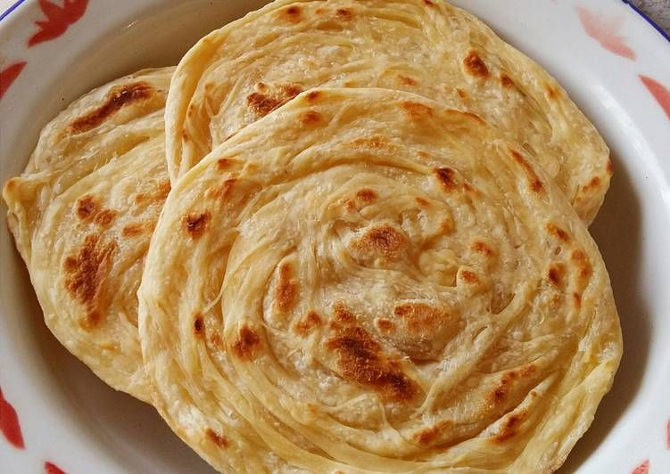

Resep kue maryam

Bahan-bahan :
250 gr tepung terigu
1 butir telur
3 sdm margarin
100 ml air hangat
2 sdm susu bubuk (optional)
1/2 sdt garam
margarin leleh untuk olesan
minyak untuk merendam
Langkah-langkah